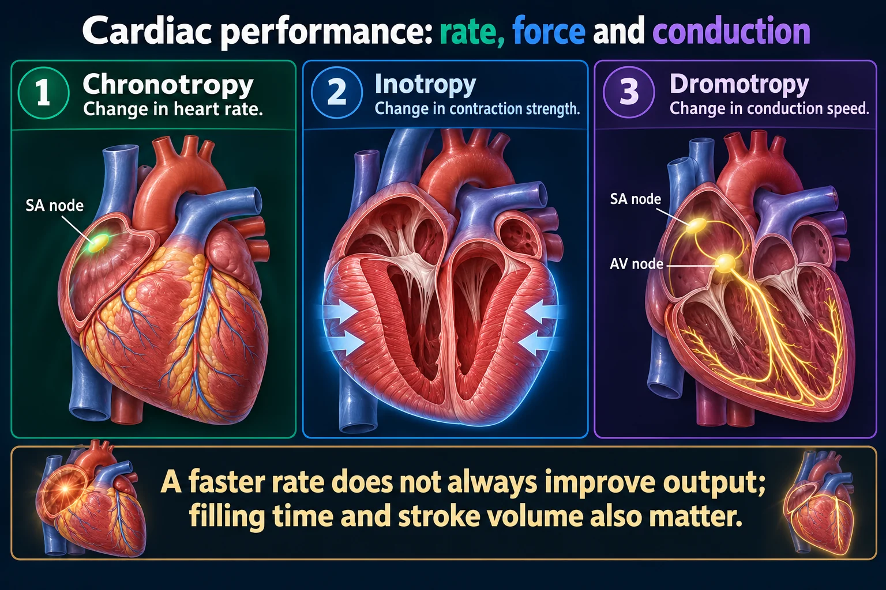

Three suffixes that decode every cardiac drug question you'll ever see
Every cardiac drug — digoxin, beta blockers, CCBs, epinephrine, atropine, adenosine — can be fully described by what it does to three things: how hard the heart squeezes, how fast it beats, and how quickly the signal crosses the AV node. Learn these three words and the direction arrows, and every other cardiac drug page starts making sense together.
📄 Simple Nursing original — opens in Drive →
Same root pattern every time: what it means, then which direction is "positive."
Ino- refers to muscle fiber/strength. Inotropic effects change how hard the ventricle squeezes with each beat — this is contractility, which drives stroke volume.

A faster rate does not always improve output; filling time and stroke volume also matter.
Chronotropy
Change in heart rate.
Inotropy
Change in contraction strength.
Dromotropy
Change in conduction speed.
Cardiac output
Heart rate multiplied by stroke volume.
Preload
Filling-related stretch before contraction.
Afterload
The load the ventricle must overcome to eject blood.
Chrono- = time (chronology). Chronotropic effects change how many times per minute the heart beats — driven mainly by the SA node.
Dromo- = running/racetrack (like a hippodrome). Dromotropic effects change how fast the electrical signal travels through the AV node on its way from the atria to the ventricles — the AV node is the "gatekeeper" between them.
Same three words, opposite arrows — and why a nurse actually cares which way each one points.
| Property | POSITIVE (↑) | NEGATIVE (↓) | Clinical relevance |
|---|---|---|---|
| Inotropic force | ↑ contractility → ↑ stroke volume & CO | ↓ contractility → ↓ stroke volume & CO | Positive inotropes support a failing pump (cardiogenic shock, acute HF); negative inotropes reduce myocardial oxygen demand |
| Chronotropic rate | ↑ heart rate | ↓ heart rate | Positive chronotropes treat symptomatic bradycardia; negative chronotropes treat tachyarrhythmias & reduce cardiac workload |
| Dromotropic AV node speed | ↑ conduction speed | ↓ conduction speed | Negative dromotropes are how we rate-control atrial fibrillation/flutter and terminate SVT; positive dromotropes risk rapid ventricular response |
Digoxin is negative chronotropic — it slows the heart on purpose. That's exactly why you check an apical pulse for a full minute before giving it, and hold the dose and notify the provider if the apical pulse is below 60 bpm in an adult.
Digoxin + a beta blocker, or digoxin + a non-dihydropyridine CCB (verapamil/diltiazem), both push chronotropic and dromotropic effects further negative — additive risk of severe bradycardia or heart block.
This is the page. Every arrow below is the reason a cardiac drug is prescribed — or the reason it's dangerous in combination.
| Drug | Inotropic | Chronotropic | Dromotropic | Why / when |
|---|---|---|---|---|
| Digoxin cardiac glycoside |
↑ Positive | ↓ Negative | ↓ Negative | Boosts contractility for HF while slowing rate/AV conduction for rate control in AFib — the classic "mixed" drug |
| Beta blockers e.g. metoprolol, atenolol |
↓ Negative | ↓ Negative | ↓ Negative | Block beta-1 → all three go down together; reduces myocardial oxygen demand and rate-controls arrhythmias |
| Calcium channel blockers non-dihydropyridine — verapamil, diltiazem |
↓ Negative | ↓ Negative | ↓ Negative | Same "all three down" pattern as beta blockers — used for rate control in AFib/SVT |
| Calcium channel blockers dihydropyridine — amlodipine, nifedipine |
— minimal | ↕ possible reflex ↑ | — minimal | Mainly vasodilate peripheral vessels, not the heart itself — reflex tachycardia can occur from BP dropping fast |
| Epinephrine | ↑ Positive | ↑ Positive | ↑ Positive | Beta-1 agonist — pushes all three up together; used in cardiac arrest, anaphylaxis, symptomatic bradycardia |
| Atropine | — minimal | ↑ Positive | ↑ Positive | Anticholinergic — blocks vagal tone on the SA/AV nodes; first-line for symptomatic bradycardia. No significant direct effect on contractile force |
| Adenosine | — minimal | ↓ Negative (brief) | ↓↓ Negative (profound) | Transiently blocks the AV node almost completely — that block is the entire mechanism for terminating SVT |
| Drug | Inotropic | Chronotropic | Dromotropic | Why / when |
|---|---|---|---|---|
| Dobutamine | ↑↑ Positive | ↑ Positive (mild) | ↑ Positive (mild) | Beta-1 selective — main job is boosting contractility in cardiogenic shock/acute HF, rate effect is a side effect to watch |
| Dopamine | ↕ dose-dependent | ↕ dose-dependent | ↕ dose-dependent | Low dose = mostly renal/mesenteric vasodilation; higher doses recruit beta-1 (↑ force & rate) then alpha-1 (vasoconstriction) |
| Amiodarone | — to mild ↓ | ↓ Negative | ↓ Negative | Class III antiarrhythmic; slows rate & conduction with comparatively little effect on contractility versus other antiarrhythmics |
| IV calcium chloride/gluconate | ↑ Positive | — minimal | — minimal | Calcium is required for excitation-contraction coupling — giving it directly can boost contractility (e.g. hyperkalemia, CCB overdose) |
No doses are listed here on purpose — always confirm exact dosing against your course materials and current orders/protocol.
Not all CCBs behave the same on this table. Non-dihydropyridines (verapamil, diltiazem) act directly on the heart — negative triad, just like a beta blocker. Dihydropyridines (amlodipine, nifedipine) mainly relax peripheral vessels and have little direct cardiac effect.